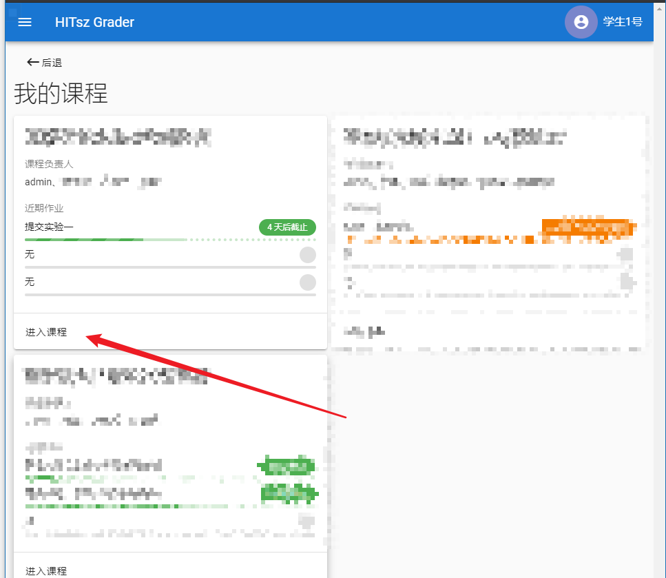
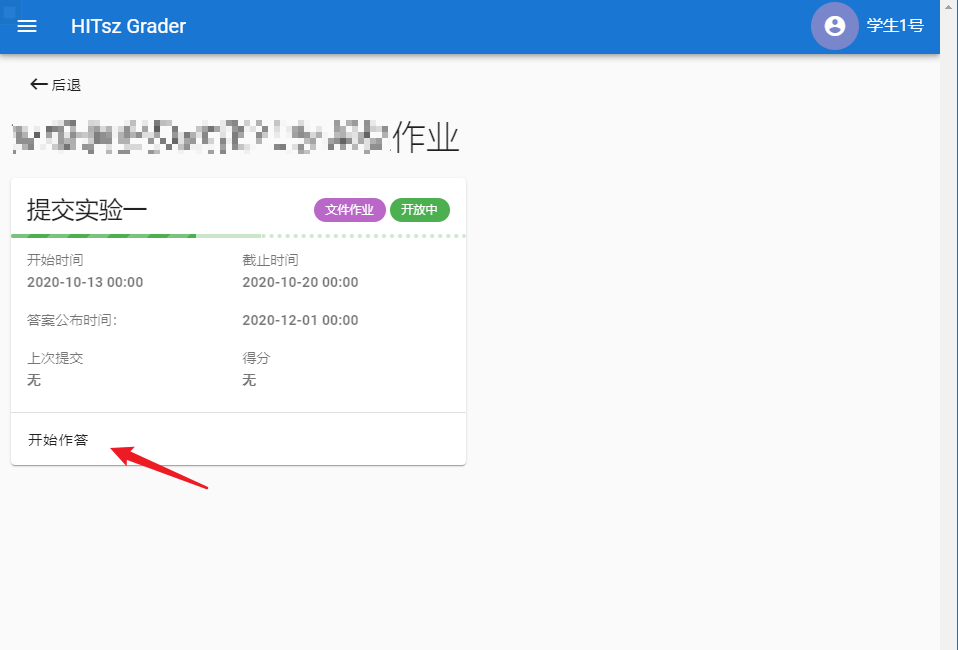
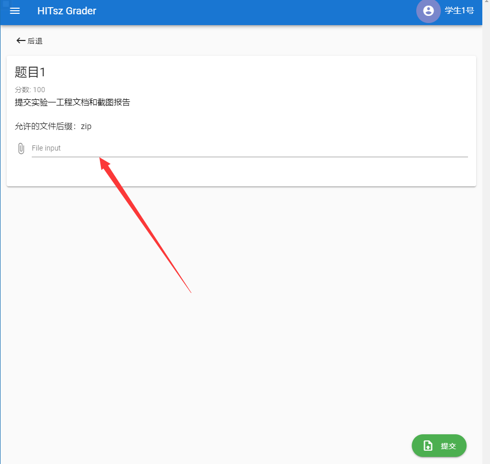
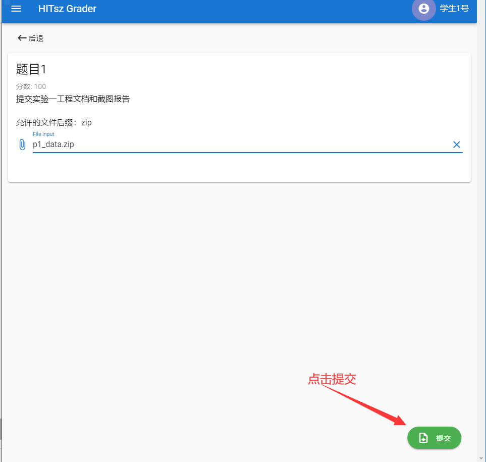

实验提交¶
实验一提交 实验设计报告 和 实验代码 。
1 实验设计报告会纳入评分（虽然不多）¶
实验设计报告要求 回答实验中的问题，并写出实验设计思路和运行结果 。
实验设计报告也是证明实验是独立完成的重要依据，有分数追求的大佬（juanwang）们不要只放代码和指导书的截图。
2 实验代码¶
只需要 提交所有修改过的代码 即可，比如pingpong实验，需要提交pingpong.c和Makfile。
在实验过程中，大家注意保存好自己的代码，保存代码的两个方法：
（1）把整个xv6-riscv-fall目录打包，然后用scp或者mobaXterm工具的sftp拷贝出来，自行保存好整个工程文件，以备下次实验使用。
（2）强烈推荐 将代码提交到自己的Github/Gitee等代码托管服务器上，具体操作系统详见将代码发布至自己的远程仓库。
3 代码及报告提交方式¶
Step1：登录HITsz Grader，用户名和密码都是学号（若学号中有字母，则为大写）。
Step2：进入课程

Step3：进入作业作答页面

Step4：点击选择文件


Step5：点击提交
